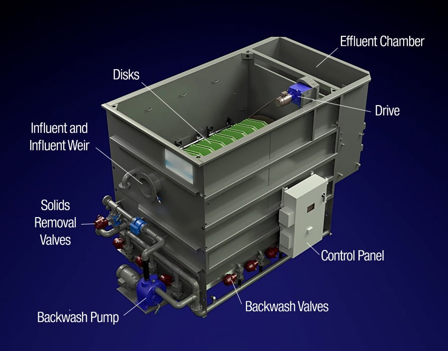
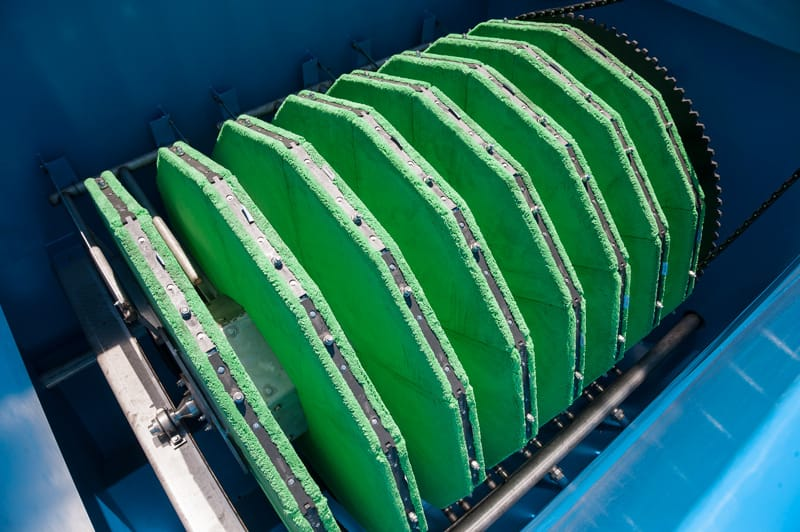

Sistema de tratamento primário avançado com tecnologia de mídia têxtil que substitui ou complementa os decantadores primários convencionais, removendo sólidos e DBO na entrada da ETE com maior eficiência e menor área física.

O AquaPrime® aplica a tecnologia de filtração por mídia têxtil já consagrada no tratamento terciário para revolucionar a etapa primária do tratamento de efluentes. Com uma combinação inovadora de filtração e coagulação/floculação química, o AquaPrime® atinge remoções de SST e DBO muito superiores às dos decantadores primários convencionais.
O resultado é uma carga orgânica significativamente menor para as etapas biológicas seguintes, permitindo redimensionar ou ampliar a capacidade de sistemas existentes sem obras extensas. O sistema é especialmente valioso em projetos de retrofit e ampliação de ETEs com restrições de espaço e orçamento.
Ocupa fração do espaço de um decantador convencional com remoção de SST e DBO muito superior.
Menor carga orgânica na entrada do reator biológico permite ampliar a capacidade ou reduzir o volume de reatores.
Redução de obras civis e menor área requerida se traduzem em economia significativa no CAPEX total da planta.
O afluente bruto é submetido a dosagem de coagulante e floculante antes de entrar nos módulos AquaPrime®. A coagulação/floculação forma flocos maiores e mais densos que são então capturados pela mídia têxtil dos discos rotativos.
A operação contínua com retrolavagem automática garante que os discos permaneçam operacionais mesmo com alta concentração de sólidos no afluente. O lodo primário gerado é descarregado de forma concentrada, reduzindo o volume a ser tratado e melhorando a digestão.
Dosagem química upstream forma flocos que ampliam a eficiência de captura na mídia têxtil.
Discos de mídia têxtil capturam sólidos, coloides e flocos na etapa de entrada da ETE.
Sólidos removidos são descarregados de forma concentrada, otimizando o tratamento de lodo.

Substituição de decantadores primários obsoletos para ampliar capacidade sem grandes obras
Projeto de ETEs compactas com menor footprint na etapa de tratamento primário
Pré-tratamento de efluentes industriais de alta concentração antes do sistema biológico
Aumento de vazão de tratamento sem expansão da planta física existente
Remoção química de fósforo já na etapa primária, antes dos processos biológicos
Tratamento rápido de extravasamentos de sistemas combinados durante eventos de chuva
Nossa equipe técnica avalia a viabilidade do AquaPrime® para sua planta e apresenta um estudo comparativo com sua solução atual.